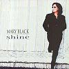

Celtic Lyrics Corner > Artists & Groups > Mary Black > Shine > One And Only
|  | One And Only |
| Credits : | Scott Cutler |
| Appears On : | Shine |
| Language : | English |
Lyrics :
I do not see the way out
I do not really know how
Like a shot in the dark
Went your hallowed ground
Had you taken too much
Kept me well out of touch
And refused to let me go
I cannot see to you pain
I do not hear you complain
You are now but a dot
In the pouring rain
You created this mess
Now I'm bent to your stress
And it seems to suit you well
Chorus
:
One and only, two can be lonely
I'm my own child, blessed and unholy
In your eyes the storm surely rising up
I do not see the way out
You cannot turn this around
Like a walk in the dark
You have weighed me down
I can't stand in your place
Can't take this away
It was all good to be true
(Chorus)
Oh you never talk about it
No, you never scream about it
You took a spirit, young and whole
You turned this child into an old soul, old soul
(Chorus)
Oh you never talk about it
No, you never scream about it
You covet things that you don't own
You turn this child into and old soul, old soul
(Chorus 2x)